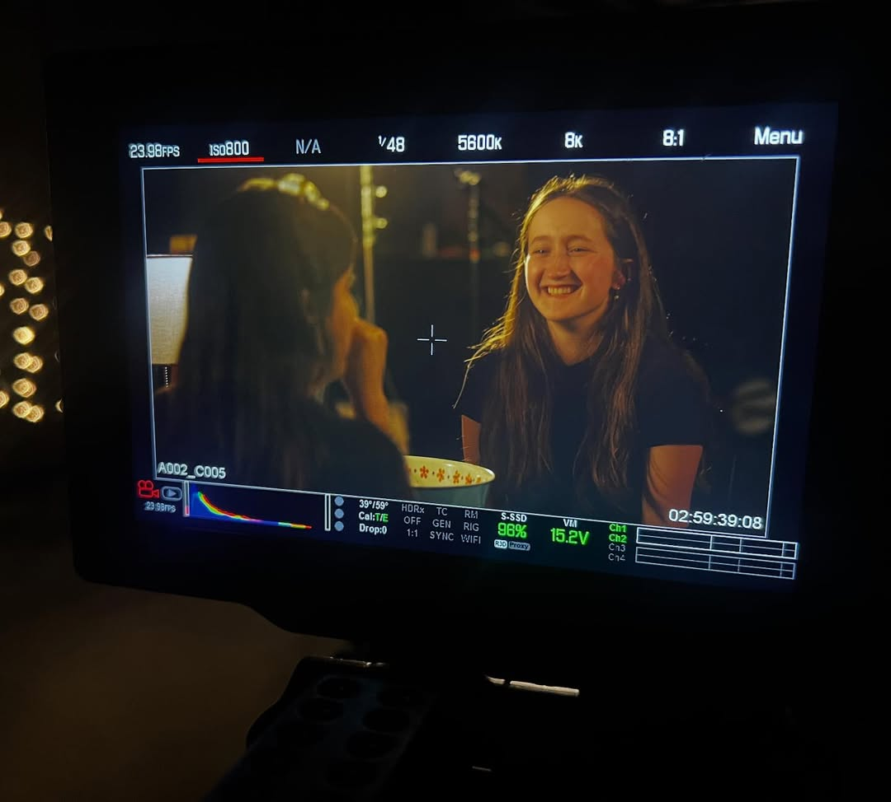

My name is Olivia Dinkelman. I am a director / producer from Salt Lake County, Utah studying film at Utah Valley University.
I have fallen in love with film a million times over in my life. There isn’t a period of growth during my 19 years that I can’t associate with some sort of film or theme. I know this isn’t an experience limited to just myself. We all crave being seen, and we all desire to see.
In the brief year and a half that I’ve begun to seriously consider that filmmaking can be a career path for me, a way I can creatively enjoy my life, I have fallen in love with every bit of the process; writing the script, creating a budget, directing actors, and putting it all together.
My strong belief is that our entire reason for life is to speak, to share, and to learn from one another. Film encompasses all of that for me and many others. Creation, and appreciating others’ creation and passion, is a way for all of us to connect with one another. I want to spend my life telling stories, whether they be real, unfiltered presentations of someone’s life, or a narrative representation of a feeling we all can understand and have experienced on some level.
My goal as a student at Utah Valley University is to better my craft. I want to find more confidence in this world of film, because no matter how much you learn, there’s always something else you can find.